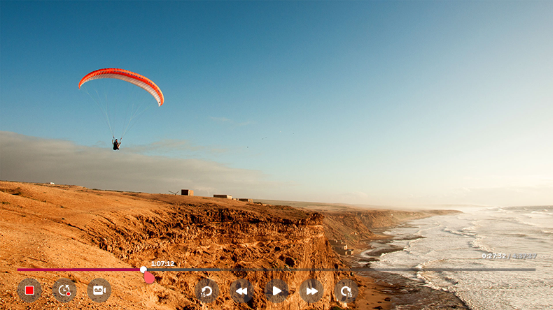

Uso de las funciones de grabación
Puede grabar un programa de televisión o un canal de radio mediante la función de grabación de LG webOS TV.
Uso de la grabación instantánea
-
Conecte un disco duro USB o una memoria USB a un puerto USB.
Se recomienda grabar en un disco duro USB. - Durante la emisión en directo, pulse el botón .
-
Pulse el botón
 a la izquierda de la pantalla.
a la izquierda de la pantalla.
- Si quiere detener la grabación, pulse el botón .

Problemas con la grabación que requieren atención
Mientras se realiza la grabación, pulse el botón para consultar la información sobre la grabación.
El funcionamiento del botón puede variar en función de su país.
El funcionamiento del botón puede variar en función de su país.
La duración de la grabación se puede configurar antes de que se inicie la grabación.
Si se conectan varios dispositivos de almacenamiento USB, se selecciona automáticamente el último dispositivo de almacenamiento que haya grabado.
La capacidad disponible de la partición del disco duro USB debe ser de al menos 1 GB.
La memoria USB debe contar con una partición de al menos 4 GB.
El tiempo de grabación puede variar en función de la capacidad de la unidad de almacenamiento USB.
Cuando se utiliza una memoria USB para grabar por primera vez, la TV realiza una prueba de rendimiento. Solo se puede grabar una vez que se haya completado la prueba.
Debido a la tecnología de protección de contenido empleada, el vídeo grabado no se puede reproducir en ordenadores ni en otros modelos de TV. Tampoco es posible reproducir el vídeo si se sustituye el circuito de vídeo de la TV.
No retire el cable USB mientras se esté grabando.
Si fuerza el apagado de la TV durante la grabación, es posible que el contenido grabado no se guarde. Lo más adecuado es detener la grabación y comprobar que el programa se ha grabado antes de apagarla.
Si un dispositivo de almacenamiento USB presenta fallos, es posible que la grabación no se complete correctamente.
Es posible que el dispositivo USB no funcione o no lo haga correctamente si se utiliza un cable de extensión o concentrador USB.
El dispositivo de almacenamiento puede utilizarse para otro fin que no sea grabar, por lo que la grabación puede verse interrumpida si falta de espacio en el dispositivo.
Se recomienda utilizar un dispositivo de almacenamiento con suficiente espacio disponible para grabar.
Durante la grabación puede ver otros canales o utilizar otras funciones.
No obstante, solo se puede utilizar el canal que esté grabando y los canales gratuitos mientras se esté grabando un canal codificado.
(Esta función solo está disponible en algunos modelos.)
(Esta función solo está disponible en algunos modelos.)
- Durante la grabación, no se pueden cambiar los modos de canal.
-
Al conectar a una señal de satélite
:
Si inicia la grabación de un canal mientras ve otro canal en un modo diferente, el canal cambiará al que se esté grabando. -
Al conectar a dos señales de satélite
:
Incluso si inicia la grabación de un canal mientras ve otro canal en un modo diferente, el canal no cambiará al que se esté grabando.
Los elementos configurables varían según el modelo.
Es posible que algunas funciones no estén disponibles mientras una grabación está en progreso.
Las grabaciones analógicas solo están disponibles en algunos modelos.
Los canales conectados a COMPONENT IN y HDMI IN no se grabarán si se realiza la grabación a través de entrada.
(El puerto COMPONENT IN solo está disponible en algunos modelos.)
(El puerto COMPONENT IN solo está disponible en algunos modelos.)
Es posible que la conexión Bluetooth y el puerto USB no funcionen correctamente al grabar con un dispositivo USB.
Las grabaciones de menos de 10 segundos no se guardan.
Puede guardar hasta 600 contenidos en una única unidad.